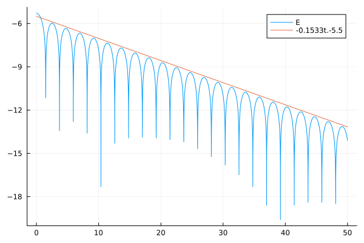

Vlasov-Poisson 1D1V Simulation Example
This example demonstrates the simulation of the Vlasov-Poisson system in 1D phase space (1 spatial dimension + 1 velocity dimension) and compares the performance and accuracy of different periodic interpolation methods available in SemiLagrangian.
Problem Description
The Vlasov-Poisson system models the evolution of a collisionless plasma:
∂f/∂t + v·∇ₓf + E·∇ᵥf = 0 (Vlasov equation)
∇²ϕ = ρ = ∫f dv (Poisson equation)
E = -∇ₓϕ (Electric field)where:
f(x,v,t): distribution function in phase spacex: spatial coordinatev: velocity coordinateE: electric fieldρ: charge density
Numerical Method
Operator Splitting: The time evolution is split into alternating advection steps:
X-advection: Move particles in position space with velocity
v∂f/∂t + v·∇ₓf = 0V-advection: Move particles in velocity space with acceleration from electric field
∂f/∂t + E·∇ᵥf = 0
The solution is computed by alternating these advections (Strang splitting):
- Advect in x by half time-step
- Advect in v by full time-step (updating E based on current charge density)
- Advect in x by half time-step
Interpolation Role
Each advection step is implemented via semi-Lagrangian interpolation:
- Trace characteristics backward along velocity vectors
- Interpolate distribution function at characteristic endpoints
- This approach avoids numerical dissipation from upwinding schemes
Test Case: Landau Damping
This example implements Landau damping, a classic weakly nonlinear plasma phenomenon:
f₀(x,v) = [1 + ε·cos(kₓ·x)] / √(2π) · exp(-v²/2)where:
ε = 0.001: Small perturbation amplitudekₓ = 0.5: Wavenumber
Expected behavior: The electric field energy decays exponentially as E(t) ∝ exp(-γL · t) where `γL ≈ 0.1533` is the Landau damping rate.
Comparison of Methods
The script compares four interpolation methods:
- FastLagrange: Locally computed 7-point Lagrange polynomials
- PeriodicLagrange: Global FFT-based Lagrange (7-point stencil)
- Spectral: Pure Fourier interpolation
- PeriodicBSpline: B-spline interpolation (order 6)
Each method shows:
- Execution time for the simulation
- Energy evolution over time
- Accuracy compared to theoretical decay rate (linear fit:
-0.1533*t - 5.5)
References
- Vlasov-Poisson system: Krall & Trivelpiece (1973)
- Landau damping: Landau (1946)
- Semi-Lagrangian schemes: Cheng & Knorr (1976), Sonnendrucker et al. (1999)
- SeLaLib (Fortran library): https://selalib.github.io/
Expected Output
- Performance comparison of different interpolation methods
- Energy decay plots comparing theoretical and numerical solutions
- Demonstration of semi-Lagrangian advection with periodic boundary conditions
using Plots
using FFTW
using SemiLagrangian
using LinearAlgebra
import Statistics: mean
struct UniformMesh
xmin::Float64
xmax::Float64
nx::Int
dx::Float64
x::Vector{Float64}
function UniformMesh(xmin, xmax, nx)
dx = (xmax - xmin) / nx
x = LinRange(xmin, xmax, nx + 1)[1:(end - 1)]
return new(xmin, xmax, nx, dx, x)
end
end
function advection!(
f::Array{Float64, 2},
p::Int64, mesh::UniformMesh, v::Vector{Float64},
nv::Int64, dt::Float64
)
nx = mesh.nx
dx = mesh.dx
fp = zeros(nx)
for j in 1:nv
fi = view(f, :, j)
alpha = - dt * v[j] / dx
interpolant = FastLagrange(p)
interpolate!(fp, interpolant, fi, alpha)
f[:, j] .= fp
end
return
endadvection! (generic function with 1 method)function compute_rho(
meshv::UniformMesh,
f::Array{Float64, 2}
)
dv = meshv.dx
rho = dv * sum(f, dims = 2)
return vec(rho .- mean(rho))
end
" compute Ex using that -ik*Ex = rho "
function compute_e(meshx::UniformMesh, rho::Vector{Float64})
nx = meshx.nx
k = 2pi / (meshx.xmax - meshx.xmin)
modes = zeros(Float64, nx)
modes .= k * fftfreq(nx, nx)
modes[1] = 1.0
rhok = fft(rho) ./ modes
rhok .*= -1im
ifft!(rhok)
return real(rhok)
endcompute_e (generic function with 1 method)Landau Damping
function landau(dt, nt::Int64)
# Set grid
p = 7
nx, nv = 128, 256
xmin, xmax = 0.0, 4pi
vmin, vmax = -6.0, 6.0
meshx = UniformMesh(xmin, xmax, nx)
meshv = UniformMesh(vmin, vmax, nv)
x = meshx.x
v = meshv.x
dx = meshx.dx
eps, kx = 0.001, 0.5
f = zeros(Float64, (nx, nv))
f .= (1.0 .+ eps * cos.(kx * x)) / sqrt(2π) .* transpose(exp.(-0.5 * v .^ 2))
fᵗ = zeros(Float64, (nv, nx))
rho = compute_rho(meshv, f)
e = compute_e(meshx, rho)
ℰ = Float64[0.5 * log(sum(e .* e) * dx)]
t = Float64[0.0]
for it in 1:nt
advection!(f, p, meshx, v, nv, 0.5dt)
rho = compute_rho(meshv, f)
e = compute_e(meshx, rho)
push!(ℰ, 0.5 * log(sum(e .* e) * dx))
push!(t, (it - 0.5) * dt)
transpose!(fᵗ, f)
advection!(fᵗ, p, meshv, e, nx, dt)
transpose!(f, fᵗ)
advection!(f, p, meshx, v, nv, 0.5dt)
end
return t, ℰ
endlandau (generic function with 1 method)nt = 5000
dt = 0.01
@time t, nrj = landau(dt, nt)
plot(t, nrj; label = "E")
plot!(t, -0.1533 * t .- 5.5; label = "-0.1533t.-5.5")